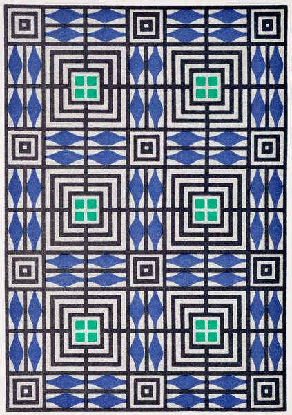

CRVI002545Gudrun Baudisch - Ceramic lamp stand
1928
1928

CRVI002533Mingering Mike - "I'm Superman" b/w "Blind in One Eye"

CRVI002534Josef Hoffmann - Cameo glass vase
1911
1911

CRVI002513Josef Müller-Brockmann - Juni-Festwochen Zürich 1959
1959
1959

CRVI001827Victor Vasarely - Sinlag II (Blue with Red)

CRVI001158John Scofield - Hand Jive
Designed by Mark Larson, photograph by Patti Perret · Blue Note CDP 7243 8 27327 2 3 · 1994
Designed by Mark Larson, photograph by Patti Perret · Blue Note CDP 7243 8 27327 2 3 · 1994

CRVI001201Osibisa - Heads
Painting by Mati Klarwein · Decca · 1972
Painting by Mati Klarwein · Decca · 1972

CRVI001709Alexej von Jawlensky - Girl with the Green Face
1910
1910

CRVI000619Gail Bichler - Is Google Too Powerful?
The New York Times Magazine, February 25 2018 · 2018
The New York Times Magazine, February 25 2018 · 2018

CRVI000534D.W. Pine - Delete 'Facebook'?
TIME, October 25-November 1, 2021 · 2021
TIME, October 25-November 1, 2021 · 2021

CRVI001222Mati Klarwein - Untitled
Painting · plate P16-vol2-87 on the artist's own site
Painting · plate P16-vol2-87 on the artist's own site

CRVI001079Kim Laughton - Untitled

CRVI001838Carlos Cruz-Diez - Couleur additive
1970
1970

CRVI001223Mati Klarwein - Untitled
Painting · plate P17-vol2-87 on the artist's own site
Painting · plate P17-vol2-87 on the artist's own site

CRVI002364Bruno Munari - Negative-Positive
1991
1991

CRVI001793Jules Olitski - Born in Snovsk
1962
1962

CRVI000443David Pelham - The Drowned World
Cover for J. G. Ballard · Penguin Science Fiction · 1974
Cover for J. G. Ballard · Penguin Science Fiction · 1974

CRVI001646Akseli Gallen-Kallela - Head of a man at a blue window

CRVI001545Lois Mailou Jones - Composition with African head and figure

CRVI001986Njideka Akunyili Crosby - Re-Branding My Love
2011
2011

CRVI000825Seymour Chwast - Canto XVIII, PPG #52
Push Pin Graphic #52 · 46 × 71 cm · 1967
Push Pin Graphic #52 · 46 × 71 cm · 1967

CRVI002142Sherrie Levine - After Mondrian

CRVI002059Christina Quarles - Exhibition image
2023
2023

CRVI001425Unidentified - Divisionist portrait of a bearded man

CRVI000293Jean-Jacques Perrey - Moog Indigo
Designer unknown · Vanguard · 1970
Designer unknown · Vanguard · 1970

CRVI001773Nicolas de Staël - Musicians
1953
1953

CRVI002354René Magritte - Man in a bowler hat with a birdcage

CRVI001802Andy Warhol - Mao
1972
1972

CRVI002461Eric Yahnker - Wrecking Ball
2014
2014

CRVI001623André Derain - Henri Matisse
1905
1905

CRVI000765Paula Scher - The Diva is Dismissed
Serigraph · 116.8 × 76.5 cm · 1994
Serigraph · 116.8 × 76.5 cm · 1994

CRVI002542Berthold Löffler - Kunstschau Wien 1908
1908
1908

CRVI000126Shigeo Fukuda - The World of Shigeo Fukuda in U.S.A.
M.H. de Young Memorial Museum, San Francisco · Junior Art Center, Los Angeles · Santa Barbara Museum of Art · 1971
M.H. de Young Memorial Museum, San Francisco · Junior Art Center, Los Angeles · Santa Barbara Museum of Art · 1971

CRVI001672Giacomo Balla - Girl Running on a Balcony
1912
1912

CRVI000553Graeme James - The Horror Ahead
The Economist, March 5-11, 2022 · 2022
The Economist, March 5-11, 2022 · 2022

CRVI000012Foodman - Ez Minzoku
Artwork by Ellen Thomas, Keith Rankin · 2017
Artwork by Ellen Thomas, Keith Rankin · 2017

CRVI000069Cluster - Cluster Il
Designer unknown · Brain · 1972
Designer unknown · Brain · 1972

CRVI000833James McMullan - Head Out to Oz
Push Pin Graphic #52 · 71 × 46 cm · 1967
Push Pin Graphic #52 · 71 × 46 cm · 1967

CRVI000859Julian Stanczak - Conferring Blue
Screenprint · 68.6 × 68.6 cm · 1981
Screenprint · 68.6 × 68.6 cm · 1981

CRVI002492Bruno Munari - Negativo positivo.
1985
1985

CRVI000828Seymour Chwast - Penny Pitch
68.6 × 53.3 cm · 1967
68.6 × 53.3 cm · 1967

CRVI000129Koichi Sato - Soap Bubbles Floated, They Floated Into Outer Space
Produced by Human Design · Fuji Television
Produced by Human Design · Fuji Television

CRVI000003Thomas Fehlmann - Visions Of Blah
Designed by Bianca Strauch · Kompakt · 2002
Designed by Bianca Strauch · Kompakt · 2002

CRVI000857Julian Stanczak - Homage
Acrylic on canvas · 1990
Acrylic on canvas · 1990

CRVI001155John Coltrane - Infinity
Designed by Richard Taylor, photograph by Chester Sheard · Impulse! AS-9225 · 1972
Designed by Richard Taylor, photograph by Chester Sheard · Impulse! AS-9225 · 1972

CRVI002082Hito Steyerl - Liquidity Inc.
2014
2014

CRVI002360Amy Sherald - Miss Everything (Unsuppressed Deliverance)
2013
2013

CRVI001197Mati Klarwein - Alexander's Dream
Painting
Painting

CRVI000489R. Kikuo Johnson - The Robots Are Coming
MIT Technology Review, May/June 2024 · 2024
MIT Technology Review, May/June 2024 · 2024

CRVI000325Lone - Ecstasy & Friends
Designer unknown · Werk Discs · 2009
Designer unknown · Werk Discs · 2009

CRVI002174Kim Whanki - 25-V-70 #173
1970
1970

CRVI001141Jackie McLean - Bluesnik
Designed by Reid Miles, photograph by Francis Wolff · Blue Note BLP 4067 · 1962
Designed by Reid Miles, photograph by Francis Wolff · Blue Note BLP 4067 · 1962

CRVI001760Josef Albers - Study for Homage to the Square: Beaming
1963
1963

CRVI000065Blank Banshee - Blank Banshee 0
Designer unknown · Hologram Bay · 2012
Designer unknown · Hologram Bay · 2012

CRVI002143Richard Prince - Untitled (Cowboy)
1989
1989

CRVI001159Kenny Burrell - Blue Lights, Volumes 1 & 2
Designed by Reid Miles, artwork by Andy Warhol · Blue Note BLP 1596 · 1958
Designed by Reid Miles, artwork by Andy Warhol · Blue Note BLP 1596 · 1958

CRVI000178Sonny Rollins - Sonny Rollins
Designed by Bob Weinstock · Prestige LP 7029 · 1953
Designed by Bob Weinstock · Prestige LP 7029 · 1953

CRVI000626Anton Ioukhnovets, Mario Sorrenti - Make America Happy Again
Esquire, February 2017 · 2017
Esquire, February 2017 · 2017

CRVI002398Ray Barretto con Adalberto Santiago - Rican/Struction
1979
1979

CRVI000705Heavy J - Pee-Wee's Big Adventure
Hand-painted Ghanaian film poster
Hand-painted Ghanaian film poster

CRVI002346René Magritte - Voice of Space (La voix des airs)
1931
1931

CRVI001992Tschabalala Self - Two Headed
2023
2023

CRVI000183Dee Dee Sharp - Songs of Faith
Designer unknown · Cameo · 1962
Designer unknown · Cameo · 1962

CRVI000307Der Plan - Normalette Surprise
Designer unknown · Ata Tak · 1981
Designer unknown · Ata Tak · 1981

CRVI001059Ingo Swann - Cosmic painting

CRVI000809Mark Tansey - Xing
Oil on canvas · 223.5 × 152.4 cm · 2021
Oil on canvas · 223.5 × 152.4 cm · 2021

CRVI001957Kerry James Marshall - Vignette 13
2008
2008

CRVI000230Me&You - Floating Heavy
Designer unknown · Tru Thoughts · 2007
Designer unknown · Tru Thoughts · 2007

CRVI001587Richard Estes - Car with reflected buildings

CRVI001849Unidentified - Concentric circle composition

CRVI001963Mark Bradford - Untitled (detail)

CRVI000646Scott Seymour, Kevin Val Aelst, Rose Engelland - The Isolated Black Professor
The Chronicle Review, January 30 2015 · 2015
The Chronicle Review, January 30 2015 · 2015

CRVI001411Robert Rauschenberg - Banner (Stoned Moon)
Robert Rauschenberg · 1969 · lithograph, Gemini G.E.L. · 1969
Robert Rauschenberg · 1969 · lithograph, Gemini G.E.L. · 1969

CRVI000639Maurizio Cattelan, Pierpaolo Ferrari - VICE, March
VICE, March 2016 · 2016
VICE, March 2016 · 2016

CRVI000667Simon Abranowicz - How I Broke My Smartphone Addiction
GQ, November 27, 2019 · 2019
GQ, November 27, 2019 · 2019

CRVI000405Elektro Guzzi - Elektro Guzzi
Designer unknown · Macro · 2010
Designer unknown · Macro · 2010

CRVI000647Françoise Mouly, Kadir Nelson - 90th Anniversary [Eustace Tilley]
The New Yorker, February 23 2015 · 2015
The New Yorker, February 23 2015 · 2015

CRVI000429Yeni Türkü - Akdeniz Akdeniz
Designer unknown · Goksoy Plakçlik · 1982
Designer unknown · Goksoy Plakçlik · 1982

CRVI000845domus - domus 1111
April 2026 · 2026
April 2026 · 2026

CRVI001967Ligel Lambert - Portrait of Glenn Ligon

CRVI001328Cornelius Cardew / The Scratch Orchestra - The Great Learning
Maker unidentified · Deutsche Grammophon
Maker unidentified · Deutsche Grammophon

CRVI000477Justin Metz - The Centre Cannot Hold
The Economist, June 29-July 5, 2024 · 2024
The Economist, June 29-July 5, 2024 · 2024

CRVI001160Kenny Burrell - Midnight Blue
Designed by Reid Miles, photograph by Francis Wolff · Blue Note BLP 4123 · 1963
Designed by Reid Miles, photograph by Francis Wolff · Blue Note BLP 4123 · 1963

CRVI000826Seymour Chwast - The Nose #11, Tricks
The Nose · 18 × 28 cm · 2005
The Nose · 18 × 28 cm · 2005

CRVI000798Joseph Beuys - [Beuys with the Eurasienstab]
Signed photograph
Signed photograph

CRVI000666Lesley Q. Palmer, Katrina Zook, Dan Saelinger - Inside the Social Security Phone Scam
AARP The Magazine, April/May 2019 · 2019
AARP The Magazine, April/May 2019 · 2019

CRVI001882Larry Bell - Glass installation

CRVI002210Piet Mondrian - Avond (Evening): The Red Tree
1910
1910

CRVI000712Tame Impala - Eventually
Designed by Robert Beatty · 2015
Designed by Robert Beatty · 2015

CRVI002070Unidentified - Disrupted Frequencies (detail)

CRVI002123Faith Ringgold - Dancing on the George Washington Bridge

CRVI000842Ottagono - Ottagono 80
marzo 1986 · anno 21 · 1986
marzo 1986 · anno 21 · 1986

CRVI000013Giant Claw - Dark Web
Artwork by Ellen Thomas, Keith Rankin · 2014
Artwork by Ellen Thomas, Keith Rankin · 2014

CRVI001974Kehinde Wiley - Portrait of Jorge Gitoo Wright

CRVI000421The UMC's - Fruits Of Nature
Designer unknown · Wild Pitch · 1991
Designer unknown · Wild Pitch · 1991

CRVI001796Alma Thomas - Starry Night and the Astronauts
1972
1972

CRVI000678Gail Bichler, Kathy Ryan, Maurizio Cattelan, Pierpaolo Ferrari - The Tech & Design Issue
The New York Times Magazine, November 17, 2019 · 2019
The New York Times Magazine, November 17, 2019 · 2019

CRVI001069David Rudnick - Poster for Making Time
Poster · Philadelphia
Poster · Philadelphia

CRVI000089FUSE - Dimension Intrusion
Designer unknown · Plus 8 Records · 1993
Designer unknown · Plus 8 Records · 1993

CRVI000424Lee Hazlewood - Love and Other Crimes
Designer unknown · Reprise Records · 1968
Designer unknown · Reprise Records · 1968

CRVI002186René Magritte - Nocturne
1925
1925

CRVI000598Unknown - We Have Seen the Future and It's New Jersey
New York, June 20, 1977 · 1977
New York, June 20, 1977 · 1977

CRVI002524Mingering Mike - Slow 'n' Easy

CRVI001363Andrew Kuo - Decoding a Trickster — Aphex Twin, 'Syro'
Chart for The New York Times · 2014-09-28 · 2014
Chart for The New York Times · 2014-09-28 · 2014

CRVI001699Benedetta Cappa - Motorboat
1923
1923

CRVI000286Herbert Bayer - Bauhaus Exhibition Poster - 50 Years of Bauhaus
Poster
Poster

CRVI000706C.A. Wisely - My Neighbor Totoro
Hand-painted Ghanaian film poster
Hand-painted Ghanaian film poster

CRVI001065Lezley Saar - Cell Realization

CRVI000813Mark Tansey - Revelever
Oil on canvas
Oil on canvas

CRVI002347René Magritte - The Art of Living (L'art de vivre)
1967
1967

CRVI000212Unknown - Dance Break
Reaction GIF · Saturday Night Live · 58 frames, 4.6s loop
Reaction GIF · Saturday Night Live · 58 frames, 4.6s loop

CRVI000016Frank Coe, Forrest J. Ackerman - Music For Robots
Designed by Frank Coe · Science Fiction Records · 1961
Designed by Frank Coe · Science Fiction Records · 1961

CRVI001621Georges Lacombe - Marine bleue, Effet de vague
c. 1893
c. 1893

CRVI001711Alexej von Jawlensky - The Hunchback
1905
1905

CRVI000669Unknown - Hong Kong's Countdown to 2047
Bloomberg Businessweek, August 19, 2019 · 2019
Bloomberg Businessweek, August 19, 2019 · 2019

CRVI001073Kim Laughton - Untitled
Published by Raddlounge
Published by Raddlounge

CRVI000023NxxxxxS - Fujita Scale
Artwork by Ivan Peev · Headcount Records · 2014
Artwork by Ivan Peev · Headcount Records · 2014

CRVI001229Pharoah Sanders - Elevation
Designed by Tim Bryant, artwork by Bodhi Wind · Impulse! AS-9261 · 1974
Designed by Tim Bryant, artwork by Bodhi Wind · Impulse! AS-9261 · 1974

CRVI001659Albert Gleizes - On a Sailboat

CRVI001823Unidentified - Coloured rhomboid composition

CRVI002116Ellsworth Kelly - Blue on White
1961
1961

CRVI000561Marshall Mckinney - Saving the Wild South
Garden & Gun, October/November 2022 · 2022
Garden & Gun, October/November 2022 · 2022

CRVI002280John Baldessari - Three figures with a framed painting

CRVI001996Firelei Báez - Untitled
2019
2019

CRVI000337Various Artists - Recorded Live Motortown Revue In Paris
Designer unknown · Universal · 2016
Designer unknown · Universal · 2016

CRVI000234Portishead - Dummy
Designer unknown · Go! Beat · 1994
Designer unknown · Go! Beat · 1994

CRVI000478Tim O'Brien - American Oligarchy
Mother Jones, January + February 2024 · 2024
Mother Jones, January + February 2024 · 2024

CRVI001877Frank Stella - Hampton Roads
1961
1961

CRVI000778Paul Rand - Boston: A New National Park
National Park Service · 1975
National Park Service · 1975

CRVI000810Mark Tansey - Invisible Hand
Oil on canvas · 213 × 182.6 cm · 2011
Oil on canvas · 213 × 182.6 cm · 2011

CRVI000811Mark Tansey - Apple Tree
Oil on canvas · 200.7 × 254 cm · Museum of Fine Arts, Houston · 2008–09
Oil on canvas · 200.7 × 254 cm · Museum of Fine Arts, Houston · 2008–09

CRVI000146Bobby Timmons - Soul Time
Designed by Ken Deardoff · 1960
Designed by Ken Deardoff · 1960

CRVI002245Mark Rothko - Untitled

CRVI001327Peter Lloyd - Tron — concept art, the Solar Sailer
Illustration by Peter Lloyd · 1982
Illustration by Peter Lloyd · 1982

CRVI001826Victor Vasarely - Pal-Ket
1974
1974

CRVI001644Cuno Amiet - Moonlit Landscape
1904
1904

CRVI002446Roberto Matta - Comment une conscience se fait univers (peut être)
1992
1992

CRVI002523Josef Müller-Brockmann - Strawinsky / Fortner / Berg (blue printing)
1955
1955

CRVI000788Paul Rand - Skull and Olive Branch
Vietnam anti-war poster · 1969
Vietnam anti-war poster · 1969

CRVI000399Mr. Fingers - Introduction
Designer unknown · MCA Records · 1992
Designer unknown · MCA Records · 1992

CRVI002386Emil Nolde - Red Clouds (Rote Wolken)

CRVI001574Georg Scholz - Exotische Prinzessin
1919
1919

CRVI002330Ed Ruscha - Norm's, La Cienega, on Fire
1964
1964

CRVI001683Gino Severini - Ballerina in Blue
1912
1912

CRVI000613Ivan Chermayeff, Thomas Geismar - Whitney Museum of American Art, 75th & Madison, Open Free Tuesday Evenings
Lithograph, 116.8 × 76.1 cm · 1977
Lithograph, 116.8 × 76.1 cm · 1977

CRVI001880Larry Bell - Glass installation

CRVI001918James Turrell - Munson (Blue)

CRVI001833Richard Anuszkiewicz - Marriage of Reds and Oranges
1992
1992

CRVI002499Unattributed - LIFE. — Numazu Port Deep Sea Aquarium

CRVI001236Mati Klarwein - Bavarian Angel
Painting · plate V11-Bavarian-Angel on the artist's own site
Painting · plate V11-Bavarian-Angel on the artist's own site

CRVI000492Joe Darrow - Sign Here, My Stallion
New York, July 1-14, 2024 · 2024
New York, July 1-14, 2024 · 2024

CRVI002328Ed Ruscha - OOF
1962-63
1962-63

CRVI001353Elvis Costello & The Attractions - High Fidelity
Designed by Barney Bubbles · F-Beat · 1980
Designed by Barney Bubbles · F-Beat · 1980

CRVI000075H. Tical - Impact Synthesized Sound And Music
Designer unknown · Vedette Records · 1971
Designer unknown · Vedette Records · 1971

CRVI002361Amy Sherald - Trans Forming Liberty
2024
2024

CRVI002421Bruno Munari - Peano Curves
1991
1991

CRVI002393Bruce Nauman - One Hundred Live and Die
1984
1984

CRVI002504Milton Glaser - Kandinsky
1984
1984

CRVI001762Josef Albers - Red Wall
1956
1956

CRVI001239Mati Klarwein - Live
Painting · plate V23-Live on the artist's own site
Painting · plate V23-Live on the artist's own site

CRVI000472Unknown - Selling Obama
Bloomberg Businessweek
Bloomberg Businessweek

CRVI002404Peter Max - Solar Phenomenon

CRVI002506Milton Glaser - The Lovin' Spoonful at Lincoln Center Philharmonic Hall
1968
1968

CRVI000196Unknown - Hello
Reaction GIF · 40 frames, 2.8s loop
Reaction GIF · 40 frames, 2.8s loop

CRVI002549Unattributed - Geometric pattern in blue, green and black

CRVI000193Unknown - Dancing
Reaction GIF · 60 frames, 3.6s loop
Reaction GIF · 60 frames, 3.6s loop

CRVI002509Dan Rawlinson - Josef Müller-Brockmann
2019
2019

CRVI000203Unknown - Popcorn
Reaction GIF · 60 frames, 6.0s loop
Reaction GIF · 60 frames, 6.0s loop

CRVI000204Unknown - Roll Safe
Reaction GIF · Kayode Ewumi as Reece Simpson · 21 frames, 1.1s loop · 2016
Reaction GIF · Kayode Ewumi as Reece Simpson · 21 frames, 1.1s loop · 2016